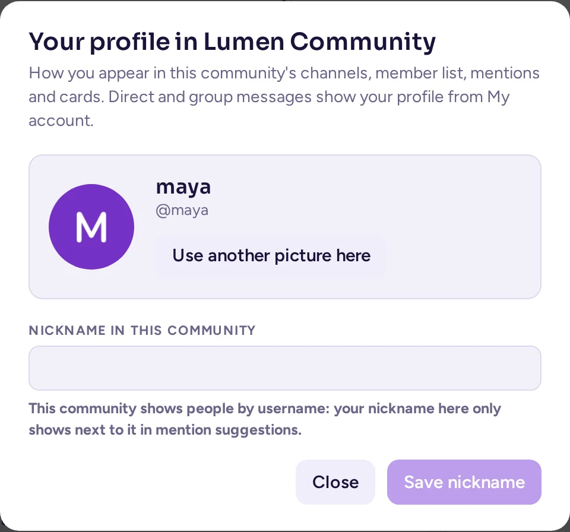
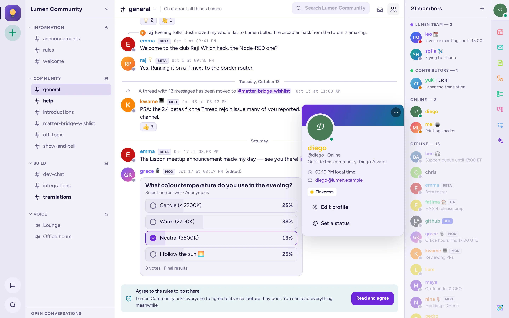
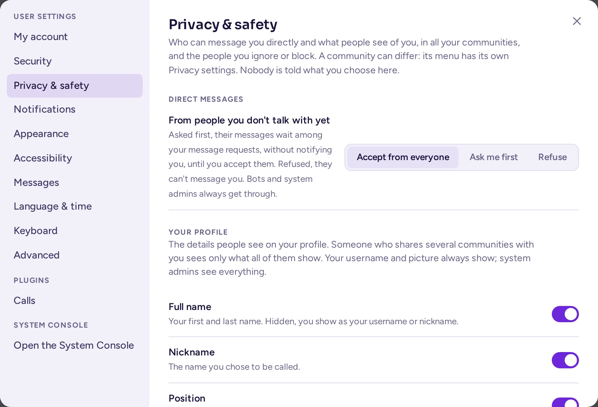
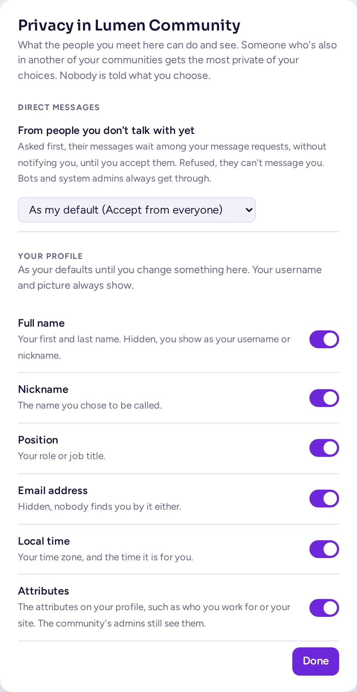

Ihr Profil und Ihre Privatsphäre
So sehen Sie für andere aus, wer Sie erreichen kann und wie Sie Ihr Konto schützen.
Ihr Profil bearbeiten
- Klicken Sie oben rechts im Fenster auf Ihr Bild und dann auf Profil & Einstellungen. Die Einstellungen öffnen sich auf Mein Konto.
- Klicken Sie auf Bild ändern, um ein JPEG-, PNG- oder BMP-Bild hochzuladen, oder auf Entfernen, um zu Ihren Initialen zurückzukehren.
- Gib deine Vorname, Nachname, Benutzername, Spitzname und Position (z. B. dein Jobtitel) ein oder ändere sie.
- Klicken Sie auf Speichern.
Ein Benutzername verwendet Kleinbuchstaben, Ziffern, Punkte, Bindestriche und Unterstriche und beginnt mit einem Buchstaben. Einige Felder können gesperrt sein: „Vom Anmeldeanbieter festgelegt“, wenn das Anmelde-System Ihrer Organisation sie bereitstellt, oder „Vom System-Administrator verwaltet“.
Um deine E-Mail-Adresse zu ändern, klicke auf E-Mail-Adresse ändern…, gib die Neue E-Mail-Adresse und dein Aktuelles Passwort ein und klicke dann auf E-Mail-Adresse ändern. Du erhältst möglicherweise eine Nachricht an die neue Adresse zur Bestätigung.
Profilangaben, die von Ihrer Organisation festgelegt werden
Deine Administratoren können Felder zu Profilen hinzufügen, wie z. B. Abteilung, Standort oder Telefonnummer. Diese erscheinen unter Profilangaben in Mein Konto, wo du die Felder ausfüllen kannst, die du ändern darfst. Eine Community kann auch eigene Mitgliedsattribute haben: Wenn du einige davon festlegen darfst, klicke mit der rechten Maustaste auf deinen eigenen Namen und wähle Attribute bearbeiten ….
Dein Profil in einer Community
Eine Community kann ein eigenes Bild und einen eigenen Spitznamen von dir anstelle deiner globalen Einstellungen anzeigen, und zwar in ihren Kanälen, der Mitgliederliste, bei Erwähnungen, @-Vorschlägen, Reaktionen und Karten. In Direktnachrichten und Gruppennachrichten wird immer dein Profil aus Mein Konto angezeigt.
- Öffne das Community-Menü und wähle Dein Profil in <community>….
- Lade unter Bild ein Bild hoch oder wähle Mein Profilbild verwenden, um dein globales Bild zu nutzen.
- Gib unter Spitzname einen ein und klicke auf die Speichern-Schaltfläche. Lass das Feld leer, um den Spitznamen aus Mein Konto zu verwenden.
- Teamabzeichen legt fest, welches Kennzeichen neben deinem Namen in dieser Community angezeigt wird – aus den Teams, denen du in dieser Community angehörst – oder Kein. Diese Option wurde von Mein Konto hierher verschoben.
Deine Karte in dieser Community zeigt „Außerhalb dieser Community: …“ mit deinem globalen Namen. Nur du kannst dort dein eigenes Bild und deinen eigenen Spitznamen festlegen. Jemand, der dich sperren kann, kann dort nur ein Bild oder einen Spitznamen zurücksetzen, der gegen die Regeln der Community verstößt – und nur über die Moderationsansicht. Wenn die Community für dich vollständige Namen und Spitznamen ausblendet (siehe Wer kann dir schreiben), wirst du dort mit deinem Benutzernamen angezeigt oder mit dem Spitznamen, den du für diese Community festgelegt hast; dieser wird nie ausgeblendet.

Ihre Rollen
Einige Communities haben Rollen, die jeder annehmen kann. Diese färben deinen Namen ein und ermöglichen möglicherweise zusätzliche Funktionen. Wähle im Community-Menü Deine Rollen…, um sie anzunehmen oder zu verlassen.
So sehen Sie für andere aus
Andere sehen deine Profilkarte, wenn sie auf deinen Namen oder dein Bild klicken: deinen Namen, Benutzernamen, deine Position, deinen eigenen Status, deine lokale Zeit, deine Rollen und die Profildetails, die deine Organisation anzeigt. Klicke auf deinen eigenen Namen, um sie zu überprüfen; sie enthält die Schaltflächen Profil bearbeiten und Setze einen Status.
Standardmäßig sehen andere „Zuletzt online …“, während du abwesend oder offline bist. Um dies zu verbergen, deaktiviere Anzeigen, wann du zuletzt online warst in Einstellungen › Darstellung.

Benutzerdefinierten Status festlegen
Ein benutzerdefinierter Status ist ein kurzer Text mit einem Emoji, z. B. „In einem Meeting“ oder „Im Urlaub“, der neben Ihrem Namen angezeigt wird.
- Klicken Sie oben rechts im Fenster auf Ihr Profilbild.
- Gib in Eigenen Status festlegen deinen Status ein und klicke auf die Emoji-Schaltfläche (Emoji auswählen), um ein Emoji auszuwählen. Oder wähle einen der Vorschläge oder Neueste Status.
- Wähle mit Zurücksetzen nach, wann er verschwindet: 30 Minuten, Eine Stunde, 4 Stunden, Heute, Diese Woche, Nicht löschen oder Datum und Uhrzeit wählen….
Zum Entfernen klicken Sie auf Benutzerdefinierten Status löschen (das ×). Für Ihre Verfügbarkeit (online, abwesend, nicht stören) siehe Ihr Status.
Während du im Fokusmodus bist, zeigt dein individueller Status 🎯 und den von dir angegebenen Grund an, bis der Fokus endet (siehe Fokusmodus). Dein eigener individueller Status wird danach wieder angezeigt, es sei denn, du hast den 🎯-Status in der Zwischenzeit geändert oder dein eigener Status ist in der Zwischenzeit abgelaufen.
Profile anderer Personen
Klicke auf den Namen oder das Bild einer Person, um deren Profilkarte mit deren lokaler Zeit und dem Abstand zu deiner Zeitzone zu sehen. Von dort aus kannst du ihnen eine Nachricht senden oder sie Anrufen. Klicke mit der rechten Maustaste auf deren Namen oder Bild für weitere Optionen: Profil, Nachricht, Einem Kanal hinzufügen, Zu einer Community einladen, Erwähnung, Benutzername kopieren, Ignorieren und Blockieren….
Eine Profilkarte hat auch ein Feld für Notizen: Klicken Sie darauf, um eine Notiz über diese Person zu schreiben. Nur Sie können sie sehen.
Wer Ihnen Nachrichten senden kann
Einstellungen › Datenschutz & Sicherheit legt deine Standardwerte fest: wie du Direktnachrichten von Personen erhältst, mit denen du noch nicht gesprochen hast, und welche Profildetails andere sehen können. Niemand wird darüber informiert, was du auswählst.
- Wähle unter Direktnachrichten, Von Personen, mit denen du noch nicht sprichst, eine der Optionen: Von allen akzeptieren, Erst nachfragen (deren Nachrichten warten bei deinen Nachrichten-Anfragen, ohne dich zu benachrichtigen, bis du sie akzeptierst) oder Ablehnen (sie können keine Direktnachricht an dich senden, keine Gruppennachricht mit dir starten und nicht in einer Direktnachricht schreiben, die du noch nicht akzeptiert hast; sie sehen die Meldung „Du kannst dieser Person nicht schreiben“). Bots und Systemadministratoren werden immer zugestellt.
- Wählen Sie unter Profilangaben, welche Ihrer Vollständiger Name, Spitzname, Position, E-Mail (nur verfügbar, wenn Ihr Server E-Mail-Adressen anzeigt), Ortszeit und Attribute andere Personen sehen sollen. Ihr Benutzername und Ihr Bild werden immer angezeigt, und Sie sowie Systemadministratoren sehen immer alles. Niemand wird darüber informiert, was Sie ausblenden, und niemand findet Sie über einen Namen oder eine E-Mail-Adresse, die Sie ausgeblendet haben.
Jede Community, der Sie angehören, kann über das Menü Datenschutzeinstellungen eine eigene Wahl für beide Optionen treffen. Jemand, der mit Ihnen mehrere Communities teilt, erhält die strengste Wahl dieser Communities; jemand, der keine mit Ihnen teilt, erhält Ihre oben genannten Standardeinstellungen. Wenn Ihr Administrator das Ignorieren, Blockieren und Nachrichten-Anfragen deaktiviert, enthält diese Seite nur noch Ihre Wahl unter Profilangaben.


Nachrichtenanfragen
Wartende Direktnachrichten werden unter Nachrichtenanfragen oben in Ihren Direktnachrichten aufgelistet. Öffnen Sie eine, um sie zu lesen. Anstelle des Nachrichtenfelds erscheint eine Leiste mit der Aufschrift „Nachrichtenanfrage von …“ mit drei Optionen:
- Akzeptieren: Die Unterhaltung wird zu einer normalen, und ihre Nachrichten benachrichtigen Sie.
- Ignorieren: Die Anfrage wird ausgeblendet, bis die Person erneut schreibt.
- Blockieren: siehe unten.
Der Absender erfährt nicht, ob du seine Anfrage gelesen, ignoriert oder blockiert hast. Wenn du die Anfragen einer Person weiterhin ignorierst, schlägt Antimatter vor, sie zu blockieren; du kannst mit Nicht jetzt oder Für diese Person nicht erneut fragen antworten.
Jemanden ignorieren oder blockieren
Klicken Sie mit der rechten Maustaste auf den Namen oder das Bild einer Person oder öffnen Sie ⋯ auf deren Profilkarte:
- Ignorieren: Sie erhalten keine Benachrichtigungen über deren Nachrichten, Direktnachrichten warten in Ihren Nachrichten-Anfragen und deren Beiträge in Kanälen werden zu einer Zeile zusammengefasst, die „Nachricht von einer Person, die Sie ignorieren“ lautet. Klicken Sie auf Anzeigen, um eine Nachricht zu lesen.
- Blockieren…: Die Person kann Ihnen keine Direktnachrichten mehr senden oder eine Gruppennachricht mit Ihnen starten, Sie erhalten keine Benachrichtigungen über deren Beiträge und deren Nachrichten in gemeinsamen Kanälen werden zusammengefasst. Bestätigen Sie mit Blockieren. In Ihrer Direktnachricht mit dieser Person wird „Sie haben … blockiert“ angezeigt, und weder Sie noch die andere Person können dort schreiben, bis Sie die Blockierung aufheben.
Sie erfahren es nicht. Zum Rückgängigmachen wähle im selben Menü Ignorieren beenden oder Blockierung aufheben, oder in Einstellungen › Datenschutz & Sicherheit, wo die Personen aufgelistet sind, die du Blockiert und Ignoriert hast.
Passwort und Multi-Faktor-Authentifizierung
Gehen Sie zu Einstellungen › Sicherheit.
Passwort ändern
- Klicken Sie neben Passwort auf Ändern….
- Geben Sie Ihr Aktuelles Passwort, das Neue Passwort und Neues Passwort bestätigen ein.
- Klicken Sie auf Passwort ändern.
Wenn du dich über das Anmeldesystem deiner Organisation (z. B. SAML, AD/LDAP oder GitLab) anmeldest, wird dies auf der Seite angegeben und dein Passwort wird dort verwaltet. Über Anmeldemethode kannst du ggf. zwischen einem Passwort und diesem System wechseln.
Wenn Sie Ihr Passwort vergessen haben, klicken Sie auf der Anmeldeseite auf Passwort vergessen? und geben Sie Ihre E-Mail-Adresse ein, um einen Link zu erhalten.
Multi-Faktor-Authentifizierung aktivieren
Bei der Multi-Faktor-Authentifizierung wird bei jeder Anmeldung ein Code aus einer App auf Ihrem Telefon abgefragt, sodass Ihr Passwort allein nicht ausreicht.
- Installieren Sie auf Ihrem Telefon eine Authenticator-App, z. B. Aegis, Google Authenticator oder 1Password.
- Klicke neben Multi-Faktor-Authentifizierung einschalten auf Einrichten….
- Scannen Sie den QR-Code mit der App oder geben Sie den darunter angezeigten Schlüssel ein.
- Geben Sie den Code aus der App ein und klicken Sie auf Aktivieren.
Um ein anderes Telefon zu verwenden, klicken Sie auf Erneut einrichten…. Zum Deaktivieren klicken Sie neben Multi-Faktor-Authentifizierung entfernen auf Entfernen, sofern Ihr Server dies nicht erfordert.
Anmeldeorte
Einstellungen › Sicherheit listet unter Wo du angemeldet bist jeden Browser, jede Desktop-App und jedes Telefon auf, mit dem du in deinem Konto angemeldet bist, einschließlich des letzten Aktivitätszeitpunkts. Klicke neben einem Eintrag, den du nicht wiedererkennst oder nicht mehr verwendest, auf Abmelden und ändere dein Passwort, wenn du vermutest, dass jemand anderes dein Konto verwendet hat.
Solange Sie verbunden sind, wird bei einer neuen Anmeldung an Ihrem Konto von einem beliebigen Gerät, einschließlich Ihres eigenen Telefons, eine Warnung oben im Fenster angezeigt: die App oder der Browser und dessen System (zum Beispiel "Firefox on Linux") sowie die Uhrzeit. Klicken Sie auf Trennen, um diese Sitzung abzumelden, oder auf Ich bin es, um die Warnung zu schließen. Die Bearbeitung auf einem Gerät entfernt die Warnung auch von Ihren anderen Geräten; mehrere Warnungen werden gestapelt, maximal drei gleichzeitig. Persönliche Zugriffstoken lösen keine Warnung aus, und diese Warnung wird nur in der Antimatter-Oberfläche angezeigt, nicht in der klassischen Web-App oder der mobilen App.
Zugriffsverlauf (klicke auf Anzeigen) listet kürzliche Anmeldungen und Änderungen an deinem Konto auf, einschließlich deren Herkunft.
Um sich von dem Gerät abzumelden, das Sie gerade verwenden, klicken Sie oben rechts auf Ihr Profilbild und dann auf Abmelden.
Tokens und autorisierte Apps
Wenn dein Server dies zulässt, enthält Einstellungen › Sicherheit auch Persönliche Zugriffs-Token, mit denen deine eigenen Skripte Antimatter als du verwenden können. Erstelle eines mit Token erstellen und kopiere es sofort: Es wird nicht erneut angezeigt. Ziehe ein Token zurück, das du nicht mehr benötigst, und teile niemals ein Token. Von dir autorisierte Apps listet die externen Anwendungen auf, denen du die Verwendung deines Kontos erlaubt hast; klicke auf Zugriff entfernen, um dies zu widerrufen.
Ihr Konto deaktivieren
Wenn Ihr Server dies zulässt, können Sie mit Konto deaktivieren am unteren Rand von Einstellungen › Sicherheit den Server verlassen. Klicken Sie auf Deaktivieren… und dann auf Deaktivieren. Sie werden abgemeldet und können sich nicht erneut anmelden; Ihre Nachrichten bleiben erhalten. Ein Administrator kann Ihr Konto wieder aktivieren.